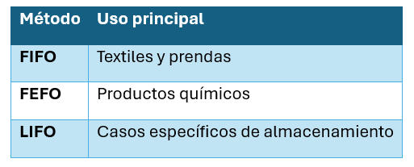

Unidad II · Tema 2.6
Métodos de rotación de inventarios y picking
La elección del método de rotación físico y contable asegura la calidad e integridad de fibras, lienzos y químicos, mientras que el picking optimiza los tiempos de preparación y surtido de pedidos.
Métodos de rotación de inventarios
FIFO (primero en entrar, primero en salir)
Los primeros artículos que entran al depósito serán los que salen primero. Se utiliza para:
- Telas.
- Hilos.
- Productos con posibilidad de deterioro o decoloración por el tiempo de almacenamiento.
LIFO (último en entrar, primero en salir)
El último producto almacenado es el primero en utilizarse.
Actualmente tiene aplicaciones limitadas y no suele recomendarse para materiales textiles con riesgo de envejecimiento.
FEFO (First Expired, First Out: primero en caducar, primero en salir)
Prioriza la salida del lote cuya fecha de caducidad esté más próxima. Muy utilizado para:
- Colorantes.
- Auxiliares químicos.
- Adhesivos.
- Productos con fecha de vencimiento.
Comparación de métodos
| Método | Uso principal |
|---|---|
| FIFO | Textiles y prendas |
| FEFO | Productos químicos |
| LIFO | Casos específicos de almacenamiento |

Picking (preparación de pedidos)
El picking consiste en seleccionar y reunir los productos solicitados por un cliente. Es una de las actividades con mayor impacto en los costos logísticos operativos del almacén.
Tipos de picking:
- Manual: El operario recorre las estanterías con una lista o carretilla manual.
- Por zonas: Los operarios se asignan a pasillos o áreas fijas del almacén.
- Por lotes: Se recolectan conjuntamente artículos de múltiples órdenes simultáneas.
- Automatizado: Utilización de carruseles, transelevadores y sistemas dirigidos por luz (Pick to Light) o voz (Voice Picking).
Comprueba tu comprensión
¿Por qué la política de rotación FEFO es obligatoria para químicos y tintes con fecha de caducidad, mientras que para telas y prendas de moda se prioriza FIFO?
Caso de estudio: Empresa "Moda ESIT"